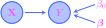

THIS CHAPTER IS CURRENTLY UNDER CONSTRUCTION!!!
11. Learning#
In the last chapter, we studied general probabilistic models and described several specific and important examples. These descriptions included careful identifications of the parameters of the models, but the question was left open concerning exactly how these parameters are chosen in practice. To cut straight to the chase:
The goal is to learn the parameters of a model based on an observed dataset.
The actual implementation of a concrete learning procedure is called a learning algorithm by machine learning researchers and engineers, and they will refer to training or fitting a model. Statisticians refer to learning as parameter estimation. But no matter what you call them, the values of the parameters that these learning procedures seek are very often solutions to some sort of optimization problem. Intuitively, we want to choose parameters to minimize the “distance” between the model probability distribution and the empirical probability distribution of the dataset:

How one precisely defines and measures “distance” (or “discrepancy”) is essentially a matter of choosing an objective function to minimize. Some learning algorithms we will study below are actually posed as maximization problems, but these may be reframed as minimization problems via the usual trick of replacing the objective function with its negative.
So, our first goal in this chapter is to describe objective functions for parameter learning. In some form or fashion, all these objectives will involve the data and model probability functions described in Chapter 10, though these functions will be called likelihood functions in this chapter. Thus, all the learning algorithms in this book are likelihood based. For some simple models, the solutions to these optimization problems may be obtained in closed form; for others, the gradient-based optimization algorithms that we studied in Chapter 9 are required to obtain approximate solutions.
Our focus in this chapter is using likelihood-based learning algorithms in a framework inspired by machine learning practice; in the chapters that follow, we will turn toward theoretical and statistical properties of likelihood-based parameter estimators in a more traditional statistics-based context.
11.1. Likelihood-based learning objectives#
To help motivate likelihood-based learning objectives, let’s begin with a simple example. Suppose that we flip a coin \(m\geq 1\) times and let \(x^{(i)}\) be the number of heads obtained on the \(i\)-th toss; thus, \(x^{(i)}\) is an observed value of a random variable
This is a very simple example of a probabilistic graphical model whose underlying graph consists of only two nodes, one for the parameter \(\theta\) and one for the (observed) random variable \(X\):

Our observations together form a dataset of size \(m\):
Based on this dataset, our goal is to learn an optimal value for \(\theta\) that minimizes the discrepancy between the model distribution and the empirical distribution of the dataset. To do this, it will be convenient to introduce the sum
which counts the total number of heads seen during the \(m\) flips of the coin. To make this concrete, suppose that \(m=10\) and \(\Sigma x=7\), so that we see seven heads over ten flips. Then, intuition suggests that \(\theta=0.7\) would be a “more optimal” estimate for the parameter then, say, \(\theta=0.1\). Indeed, if \(\theta=0.1\), we would expect it highly unlikely to observe seven heads over ten flips when there is only a one-in-ten chance of seeing a head on a single flip.
We may confirm our hunch by actually computing probabilities. Assuming, as always, that the observations in the dataset are independent, we have
Notice that the value of the joint mass function depends only on the sum (11.1). If this sum is \(\Sigma x=7\) and we have \(m=10\) and \(\theta=0.1\), then
On the other hand, when \(\theta=0.7\), we have
Thus, it is five orders of magnitude more likely to observe a dataset with \(x=7\) for \(\theta=0.7\) compared to \(\theta=0.1\). In fact, when \(\Sigma x=7\) and \(m=10\), the value \(\theta = 0.7\) is a global maximizer of (11.2) as a function of \(\theta\), which may be verified by inspecting the graph:
Show code cell source
import torch
from torch.utils.data import DataLoader, TensorDataset
import torch.nn.functional as F
from torch.distributions.normal import Normal
from torch.distributions.bernoulli import Bernoulli
import numpy as np
import scipy as sp
import seaborn as sns
import pandas as pd
import matplotlib.pyplot as plt
import matplotlib_inline.backend_inline
import matplotlib.colors as clr
from collections import defaultdict
import warnings
plt.style.use('../aux-files/custom_style_light.mplstyle')
matplotlib_inline.backend_inline.set_matplotlib_formats('svg')
warnings.filterwarnings("ignore")
blue = '#486AFB'
magenta = '#FD46FC'
m = 10
x = 7
def likelihood(theta, x, m):
return (theta ** x) * ((1 - theta) ** (m - x))
predict_grid = np.linspace(0, 1)
plt.plot(predict_grid, likelihood(predict_grid, x, m))
plt.axvline(x=0.7, color=magenta, linestyle='--')
plt.xlabel('$\\theta$')
plt.ylabel('likelihood')
plt.gcf().set_size_inches(w=5, h=3)
plt.tight_layout()

Note the label along the vertical axis; when the dataset is held fixed, the values of the joint mass function (11.2) as a function of the parameter \(\theta\) are referred to as likelihoods. This function is called the data likelihood function and is denoted
When the dependence of the likelihood function on the dataset does not need to be explicitly indicated, we shall often simply write \(\mathcal{L}(\theta)\).
Thus, we see that the parameter \(\theta = 0.7\) is a solution to the optimization problem that consists of maximizing the likelihood function \(\mathcal{L}(\theta)\). This is a simple example of maximum likelihood estimation, or MLE.
We see from (11.2) that the data likelihood function is a product of probabilities. Thus, if \(m\) is very large, the values of \(\mathcal{L}(\theta)\) will be very small. For example, in the case that \(m=100\) and \(\Sigma x=70\) (which are still quite small values), we get the following plot:
Show code cell source
m = 100
x = 70
plt.plot(predict_grid, likelihood(predict_grid, x, m))
plt.axvline(x=0.7, color=magenta, linestyle='--')
plt.xlabel('$\\theta$')
plt.ylabel('likelihood')
plt.gcf().set_size_inches(w=5, h=3)
plt.tight_layout()

This often leads to difficulties when implementing MLE in computer algorithms due to numerical round-off. The machine is liable to round very small numbers to \(0\). For this reason (and others), we often work with the (base-\(e\)) logarithm of the data likelihood function, denoted by
This is called the data log-likelihood function. As with the data likelihood function, if the dataset does not need to be explicitly mentioned, we will often write \(\ell(\theta)\).
MLE is the optimization problem with the data likelihood function \(\mathcal{L}(\theta)\) as the objective function. But it is not hard to prove (see the suggested problems for this section) that the maximizers of the data likelihood function \(\mathcal{L}(\theta)\) are the same as the maximizers of the data log-likelihood function \(\ell(\theta)\). For our Bernoulli model with \(m=100\) and \(\Sigma x=70\), a visual comparison of \(\mathcal{L}(\theta)\) and \(\ell(\theta)\) is given in:
Show code cell source
def log_likelihood(theta, x, m):
return x * np.log(theta) + (m - x) * np.log(1 - theta)
predict_grid = np.linspace(0, 1)
_, axes = plt.subplots(ncols=2, figsize=(10, 3))
axes[0].plot(predict_grid, likelihood(predict_grid, x, m))
axes[1].plot(predict_grid, log_likelihood(predict_grid, x, m))
axes[0].axvline(x=0.7, color=magenta, linestyle='--')
axes[1].axvline(x=0.7, color=magenta, linestyle='--')
axes[0].set_xlabel('$\\theta$')
axes[0].set_ylabel('likelihood')
axes[1].set_xlabel('$\\theta$')
axes[1].set_ylabel('log-likelihood')
plt.tight_layout()

Notice that the values of \(\ell(\theta)\) are on a much more manageable scale compared to the values of \(\mathcal{L}(\theta)\), and that the two functions have the same global maximizer at \(\theta=0.7\).
Using the data log-likelihood function as the objective, we may easily compute the MLE in closed form for our Bernoulli model:
Theorem 11.1 (MLE for the Bernoulli model, part 1)
Consider the Bernoulli model described above and suppose that \(0 < \Sigma x < m\). The (unique) global maximizer \(\theta^\star\) of the data log-likelihood function \(\ell(\theta)\) over \(\theta \in (0,1)\) is given by \(\theta^\star = \Sigma x/m\). Thus, \(\theta^\star=\Sigma x/m\) is the maximum likelihood estimate.
Proof. First note that
from (11.2). As you well know, the maximizers of \(\ell(\theta)\) over \((0,1)\) must occur at points where \(\ell'(\theta)=0\). But
and a little algebra yields the solution \(\theta = \Sigma x/m\) to the equation \(\ell'(\theta)=0\). To confirm that \(\theta = \Sigma x/m\) is a global maximizer over \((0,1)\), note that the second derivatives of both \(\log{\theta}\) and \(\log{(1-\theta)}\) are always negative, and hence \(\ell''(\theta)<0\) as well since \(\Sigma x\) and \(m-\Sigma x\) are positive (this is a manifestation of concavity). Thus, \(\theta^\star = \Sigma x/m\) must be the (unique) global maximizer of \(\ell(\theta)\). Q.E.D.
Note that the data likelihood function
is exactly the data joint probability function, in the language of Chapter 10. The latter is the product
where
is the model probability function. As a function of \(\theta\) with \(x\) held fixed, we call
the model likelihood function and
the model log-likelihood function. When the data point \(x\) does not need to be mentioned explicitly, we will write \(\mathcal{L}(\theta)\) and \(\ell(\theta)\) in place of \(\mathcal{L}(\theta;x)\) and \(\ell(\theta;x)\). Note that this clashes with our usage of \(\mathcal{L}(\theta)\) and \(\ell(\theta)\) to represent the data likelihood and log-likelihood functions when the dataset is not made explicit. You will need to rely on context to clarify which of the two types of likelihood functions (data or model) is meant when we write \(\mathcal{L}(\theta)\) or \(\ell(\theta)\).
It will be convenient to describe an optimization problem involving the model likelihood function that is equivalent to MLE. Here, equivalence means that the two optimization problems have the same solutions. This new (but equivalent!) optimization problem is appealing in part because it directly uses the empirical probability distribution of the dataset and thus more closely aligns us with the intuitive scheme described in the introduction to this chapter, that the goal of parameter learning is to minimize the “distance” (or “discrepancy”) between the model distribution and the empirical distribution. This optimization problem is also useful because it opens the door for the stochastic gradient descent algorithm from Chapter 9 when closed form solutions are not available.
To describe the new optimization problem, let’s consider again our Bernoulli model. Let \(\hat{p}(x)\) be the empirical mass function of the dataset
Thus, in general we have
for all \(x\in \bbr\), but for our particular Bernoulli model, this simplifies to
where \(\Sigma x=x^{(1)} + \cdots + x^{(m)}\). Letting \(\widehat{X}\) be a Bernoulli random variable with \(\hat{p}(x)\) as its mass function, we consider the stochastic objective function
where \(\ell(\theta;x)\) is the model log-likelihood function. Note that
and so by comparison with (11.3) we see that the stochastic objective function \(J(\theta)\) differs from the data log-likelihood function \(\ell\big( \theta; x^{(1)},\ldots,x^{(m)}\big)\) only by a constant factor of \(1/m\). Therefore, MLE is equivalent to the optimization problem with \(J(\theta)\) as an objective function, where equivalence means that the two problems have the same solutions. Thus:
Theorem 11.2 (MLE for the Bernoulli model, part 2)
Consider the Bernoulli model described above, suppose that \(0 < \Sigma x < m\), and let \(\hat{p}(x)\) be the empirical mass function of a dataset. The (unique) maximum likelihood estimate \(\theta^\star = \Sigma x/m\) is the global maximizer for the optimization problem with the stochastic objective function
where \(\ell(\theta;x)\) is the model log-likelihood function and \(\widehat{X} \sim \hat{p}(x)\).
Then, by combining Theorem 11.1 and Theorem 11.2, we conclude:
Theorem 11.3 (Three ways to obtain an MLE)
The maximum likelihoood estimate for the Bernoulli model may be obtained by maximizing the data likelihood function \(\mathcal{L}(\theta)\), the data log-likelihood function \(\ell(\theta)\), or the stochastic objective function \(J(\theta)\).
Our description of likelihood-based learning methods thus far has focused on the simple Bernoulli model. However, from this specific and simple case I am hoping that you can see an outline of a general method able to fit any probabilistic model to data. In particular, all the models we studied in the previous chapter have model and data likelihood functions, and thus these general methods apply to them.
To be more precise, we need to distinguish between two types of models. The linear regression, logistic regression, and neural network models that we studied in the previous chapter will all be trained as fully-observed discriminative models. This means two things: (1) all stochastic nodes in the underlying graphs are observed, and (2) the likelihood functions are obtained from the conditional probability functions of the models. The Gaussian mixture models will be trained as partially-observed generative models, which means that the straightfoward MLE algorithm will need to be replaced with the expectation maximization (or EM) algorithm. We will address the EM algorithm separately in Section 11.5 below.
To describe the MLE algorithm for the first type of models, we need to define the likelihood-based objective functions. Note that these functions are all defined in terms of the data and model conditional probability functions from Section 10.
Definition 11.1 (MLE training objectives for fully-observed discriminative models)
Let \(\btheta\in \bbr^{k}\) be the parameter vector of a fully-observed discriminative model and let \(\hat{p}(\bx,y)\) be the empirical mass function of a dataset
Define the data likelihood function
\[ \mathcal{L}\big(\btheta; \ \bx^{(1)},\ldots,\bx^{(m)}, y^{(1)},\ldots,y^{(m)}\big) \def p \big(y^{(1)},\ldots,y^{(m)} \mid \bx^{(1)},\ldots,\bx^{(m)}; \ \btheta \big) \]and the model likelihood function
\[ \mathcal{L}(\btheta; \ \bx, y) \def p ( y \mid \bx ; \ \btheta) \]Define the data log-likelihood function
\[ \ell\big(\btheta; \ \bx^{(1)},\ldots,\bx^{(m)}, y^{(1)},\ldots,y^{(m)}\big) \def \log{\mathcal{L}\big(\btheta; \ \bx^{(1)},\ldots,\bx^{(m)}, y^{(1)},\ldots,y^{(m)}\big)}. \]and the model log-likelihood function
\[ \ell(\btheta; \ \bx, y) \def \log{\mathcal{L}(\btheta; \ \bx, y)}. \]Define the stochastic objective function
\[ J\big(\btheta; \ \bx^{(1)},\ldots,\bx^{(m)}, y^{(1)},\ldots,y^{(m)}\big) \def E \big( \ell\big(\btheta; \widehat{\bX}, \widehat{Y}\big) \big), \]where \((\widehat{\bX}, \widehat{Y}) \sim \hat{p}(\bx, y)\).
From independence of the dataset, we obtain the following expressions for these training objectives:
Theorem 11.4 (Formulas for MLE training objectives)
Let the notation be as in Definition 11.1. We have
and
and
We now state the MLE algorithm for fully-observed discriminative models; note the similarity to Theorem 11.3.
Definition 11.2 (Maximum likelihood estimation for fully-observed discriminative models)
Let the notation be as in Definition 11.1. A maximum likelihood estimate is a parameter vector \(\btheta^\star\) that is a solution to one of the following three equivalent optimization problems:
Maximize the data likelihood function
Maximize the data log-likelihood function
Maximize the stochastic objective function
In practice, nobody ever maximizes the data likelihood function directly; instead, maximum likelihood estimates are obtained via the other two objective functions in the forms (11.4) and (11.5). As we mentiond above, the stochastic objective function has the advantage of allowing the use of stochastic gradient descent when closed form solutions are not available.
11.2. MLE for linear regression#
Linear regression models have the special property that maximum likelihood estimates may be obtained in closed form. To derive them, we shall assume—as many books in statistics and machine learning do—that the variance parameter \(\sigma^2\) is a fixed, known number and does not need to be learned. You will address the case that \(\sigma^2\) is unknown in the suggested problems for this section.
Therefore, the underlying graph of the linear regression model is of the form
{kind=link}
where \(\bbeta \in \mathbb{R}^{n\times 1}\) and \(\beta_0 \in \bbr\) are the only parameters. The link function at \(Y\) is still given by
Then, given a dataset
we may retrieve the data log-likelihood function from Section 10.2:
where \(\mu^{(i)} = \bx^{(i)} \bbeta + \beta_0\) for each \(i=1,\ldots,m\).
The maximizers of \(\ell(\bbeta,\beta_0)\) will occur at those parameter values for which \(\nabla \ell(\bbeta, \beta_0)=0\). Since \(-m\log{\sqrt{2\pi\sigma^2}}\) is constant with respect to the parameters, it may be dropped, leaving the equivalent objective function
But the reciprocal variance \(1/\sigma^2\) (i.e., the precision) is fixed, and so it too may be dropped, leaving us with the equivalent objective function
Using this latter objective function, we obtain:
Theorem 11.5 (Maximum likelihood estimates for linear regression with known variance)
Let the notation be as above, and let
where \(\bbeta^T = (\beta_1,\ldots,\beta_n)\). Provided that the \((n+1) \times (n+1)\) square matrix \(\mathcal{X}^T \mathcal{X}\) is invertible, the maximum likelihood estimates for the parameters \(\bbeta\) and \(\beta_0\) are given by
Proof. As we noted above, the MLEs may be obtained by maximizing the function \(J(\btheta)\) given in (11.6), which may be rewritten as
But as you will prove in the suggested problems, taking the gradient gives
where \(\text{Jac}\left(\by - \mathcal{X}\btheta \right)\) is the Jacobian matrix of the function
But it is easy to show that \(\text{Jac}\left(\by - \mathcal{X}\btheta \right) = - \mathcal{X}\), and so
Setting the gradient to zero and solving gives
from which the desired equation follows. The only thing that is left to prove is that we have actually obtained a maximizer. This follows from concavity of the objective function \(J(\btheta)\), which you will establish in the suggested problems. Q.E.D.
Note that the maximizer of the objective function
is the same as the minimizer of the objective function
called the residual sum of squares. The name comes about from the terminology introduced in Section 10.2, where we learned that the differences
are called the residuals. Thus, the maximum likelihood parameter estimates are those that minimize the residual sum of squares, which explains why the MLEs are also often called the ordinary least squares (OLS) estimates.
It is worth writing out the MLEs in the case of simple linear regression:
Corollary 11.1 (Maximum likelihood estimates for simple linear regression with known variance)
Letting the notation be as above, the MLEs for the parameters \(\beta_0\) and \(\beta_1\) in a simple linear regression model are given by
where \(\bar{x} = \frac{1}{m} \sum_{i=1}^m x^{(i)}\) and \(\bar{y} = \frac{1}{m} \sum_{i=1}^m y^{(i)}\) are the empirical means.
Proof. First note that
Assuming this matrix has nonzero determinant \(m \sum_{i=1}^m {x^{(i)}}^2 - m^2 \bar{x}^2\neq 0\), we have
But
and so from
we conclude
But as you may easily check, we have
and
from which the desired equation for \(\beta_1\) follows. To obtain the equation for \(\beta_0\), note that
implies \(m \beta_0 + m \beta_1 \bar{x} = m \bar{y}\), and so \(\beta_0 = \bar{y} - \beta_1 \bar{x}\). Q.E.D.
To illustrate the concepts, let’s take a simple toy dataset consisting of the three points
We may use the formulas above to obtain the MLEs for the two parameters \(\beta_0,\beta_1 \in \bbr\). Plotting the regression line \(y=\beta_0 + \beta_1 x\) along with the data yields the left-hand plot in what follows, while the contours of the objective function \(J(\btheta)\) along with the MLE yield the right-hand plot:
Show code cell source
# toy data
X = np.array([[1, 0], [1, 1], [1, 2]])
y = np.array([0, 1, 3]).reshape(-1, 1)
# MLEs for parameters
beta0, beta1 = -1 / 6, 3 / 2
# define objective function
def J(theta, X, y):
return -0.5 * np.linalg.norm(y - X @ theta, axis=0) ** 2
# define grid
linspace_x = np.linspace(-5, 6)
linspace_y = np.linspace(-4, 5)
x_grid, y_grid = np.meshgrid(linspace_x, linspace_y)
contour_grid = np.column_stack((x_grid.reshape(-1, 1), y_grid.reshape(-1, 1))).T
z = J(contour_grid, X, y).reshape(x_grid.shape)
# plot
_, axes = plt.subplots(ncols=2, figsize=(9, 3))
grid = np.linspace(0, 2)
axes[0].scatter(X[:, 1], y, s=30)
axes[0].plot(grid, beta0 + beta1 * grid, color=magenta)
axes[0].set_xlabel('$x$')
axes[0].set_ylabel('$y$')
axes[1].contour(x_grid, y_grid, z, levels=20, colors=blue, linestyles='solid')
axes[1].scatter([beta0], [beta1], s=50, color=magenta)
axes[1].set_xlabel('$\\beta_0$')
axes[1].set_ylabel('$\\beta_1$')
plt.tight_layout()

You will compute the maximum likelihood estimates for the parameters \(\beta_0\) and \(\beta_1\) in the suggested problems.
11.3. MLE for logistic regression#
Show code cell source
# import the data
url = 'https://raw.githubusercontent.com/jmyers7/stats-book-materials/main/data/ch10-book-data-01.csv'
df = pd.read_csv(url)
# plot the data
g = sns.scatterplot(data=df, x='x_1', y='x_2', hue='y')
# change the default seaborn legend
g.legend_.set_title(None)
new_labels = ['class 0', 'class 1']
for t, l in zip(g.legend_.texts, new_labels):
t.set_text(l)
plt.xlabel('$x_1$')
plt.ylabel('$x_2$')
plt.xlim(-1.1, 3.1)
plt.ylim(-32, 42)
plt.gcf().set_size_inches(w=5, h=4)
plt.tight_layout()

Show code cell source
# import scaler from scikit-learn
from sklearn.preprocessing import StandardScaler
# define the SGD function
def SGD(parameters, J, X, num_epochs, batch_size, lr, tracking='epoch', y=None, decay=0, max_steps=-1, J_args=None, shuffle=True, random_state=None):
# if no arguments to the objective are passed, set `J_args` to the empty dictionary
J_args = {} if J_args is None else J_args
# define data loader
if random_state is not None:
torch.manual_seed(random_state)
dataset = TensorDataset(X, y) if y is not None else X
data_loader = DataLoader(dataset=dataset, batch_size=batch_size, shuffle=shuffle)
# initialize lists and a dictionary to track objectives and parameters
running_objectives = []
running_parameters = defaultdict(list)
step_count = 0
# begin looping through epochs
for t in range(num_epochs):
# initialize a list to track per-step objectives. this will only be used if
# tracking is set to 'epoch'
per_step_objectives = []
# begin gradient descent loop
for mini_batch in data_loader:
# `mini_batch` will be a pair of tensors if `y` is not None; otherwise it will be a single tensor. when
# computing the objective, we need to distinguish the case:
if y is not None:
objective = J(*mini_batch, parameters=parameters, **J_args)
else:
objective = J(mini_batch, parameters=parameters, **J_args)
# if we are tracking per gradient step, then add objective value and parameters to the
# running lists. otherwise, we are tracking per epoch, so add the objective value to
# the list of per-step objectives
if tracking == 'gd_step':
running_objectives.append(objective.detach().view(1))
for name, parameter in parameters.items():
running_parameters[name].append(parameter.detach().clone())
else:
per_step_objectives.append(objective.detach().view(1))
# compute gradients
objective.backward()
# take a gradient step and update the parameters
with torch.no_grad():
for parameter in parameters.values():
g = ((1 - decay) ** (t + 1)) * parameter.grad
parameter -= lr * g
# zero out the gradients to prepare for the next iteration
for parameter in parameters.values():
parameter.grad.zero_()
# if we hit the maximum number of gradient steps, break out of the inner `for`
# loop
step_count += 1
if step_count == max_steps:
break
# if we are tracking per epoch, then add the average per-step objective to the
# list of running objectives. also, add the current parameters to the list of running
# parameters
if tracking == 'epoch':
per_step_objectives = torch.row_stack(per_step_objectives)
running_objectives.append(torch.mean(per_step_objectives))
for name, parameter in parameters.items():
running_parameters[name].append(parameter.detach().clone())
# if we hit the maximum number of gradient steps, break out of the outer `for`
# loop
if step_count == max_steps:
break
return dict(running_parameters), running_objectives
# convert the data to numpy arrays
X = df[['x_1', 'x_2']].to_numpy()
y = df['y'].to_numpy()
# scale the input data
ss = StandardScaler()
X = ss.fit_transform(X=X)
# convert the data to tensors
X = torch.tensor(data=X, dtype=torch.float32)
y = torch.tensor(data=y, dtype=torch.float32).reshape(-1, 1)
# define the objective function for logistic regression
def J(X, y, parameters):
beta = parameters['beta']
beta0 = parameters['beta0']
phi = torch.sigmoid(X @ beta + beta0)
return -1 * torch.mean(y * torch.log(phi) + (1 - y) * torch.log(1 - phi))
# define the logistic regression model
def model(X, parameters):
beta = parameters['beta']
beta0 = parameters['beta0']
phi = torch.sigmoid(X @ beta + beta0)
return (phi >= 0.5).to(torch.int)
# define parameters for SGD
sgd_parameters = {'num_epochs': [60, 10, 50],
'batch_size': [1024, 8, 1],
'lr': [1, 1e-1, 1e-1],
'decay': [0, 0, 1e-1]}
# define grid for contour plot
resolution = 1000
x1_grid = np.linspace(-1, 3, resolution)
x2_grid = np.linspace(-30, 40, resolution)
x1_grid, x2_grid = np.meshgrid(x1_grid, x2_grid)
predict_grid = np.column_stack((x1_grid.reshape((resolution ** 2, -1)), x2_grid.reshape((resolution ** 2, -1))))
predict_grid = ss.transform(X=predict_grid)
predict_grid = torch.tensor(data=predict_grid, dtype=torch.float32)
# define color map for contour plot
cmap = clr.LinearSegmentedColormap.from_list('custom', [blue, magenta], N=2)
# define the figure and subfigures
fig = plt.figure(constrained_layout=True, figsize=(10, 10))
subfigs = fig.subfigures(ncols=1, nrows=3)
for i, subfig in enumerate(subfigs):
# grab SGD parameters
sgd_parameters_slice = {name: parameter[i] for name, parameter in sgd_parameters.items()}
batch_size = sgd_parameters_slice['batch_size']
lr = sgd_parameters_slice['lr']
decay = sgd_parameters_slice['decay']
subfig.suptitle(f'batch size$={batch_size}$, $\\alpha = {lr}$, $\\gamma = {decay}$')
# define the axes per row
axes = subfig.subplots(ncols=2, nrows=1)
# initialize the parameters
torch.manual_seed(42)
beta = torch.normal(mean=0, std=1e-1, size=(2, 1)).requires_grad_(True)
beta0 = torch.normal(mean=0, std=1e-1, size=(1,)).requires_grad_(True)
parameters = {'beta': beta, 'beta0': beta0}
# run SGD
running_parameters, running_objectives = SGD(parameters=parameters,
J=J,
X=X,
y=y,
tracking='epoch',
**sgd_parameters_slice)
# plot the objective function
axes[0].plot(range(len(running_objectives)), running_objectives)
axes[0].set_xlabel('epochs')
axes[0].set_ylabel('objective $J(\\theta)$')
# grab the learned parameters
learned_parameters = {name: parameter[-1] for name, parameter in running_parameters.items()}
# apply the fitted model to the grid
z = model(X=predict_grid, parameters=learned_parameters)
# plot the decision boundary and colors
z = z.reshape(shape=(resolution, resolution))
axes[1].contourf(x1_grid, x2_grid, z, cmap=cmap, alpha=0.45)
axes[1].contour(x1_grid, x2_grid, z)
axes[1].set_xlabel('$x_1$')
axes[1].set_ylabel('$x_2$')
axes[1].set_xlim(-1.1, 3.1)
axes[1].set_ylim(-32, 42)
# plot the data
g = sns.scatterplot(data=df, x='x_1', y='x_2', hue='y', ax=axes[1])
# change the default seaborn legend
g.legend_.set_title(None)
new_labels = ['class 0', 'class 1']
for t, l in zip(g.legend_.texts, new_labels):
t.set_text(l)

11.4. MLE for neural networks#
Show code cell source
# define the objective function for neural network
def J(X, y, parameters):
alpha = parameters['alpha']
alpha0 = parameters['alpha0']
beta = parameters['beta']
beta0 = parameters['beta0']
Z = F.relu(X @ alpha + alpha0)
phi = torch.sigmoid(Z @ beta + beta0)
epsilon = 1e-5
phi = torch.clamp(input=phi, min=epsilon, max=1 - epsilon)
return -1 * torch.mean(y * torch.log(phi) + (1 - y) * torch.log(1 - phi))
# define the neural network model
def model(X, parameters):
alpha = parameters['alpha']
alpha0 = parameters['alpha0']
beta = parameters['beta']
beta0 = parameters['beta0']
Z = F.relu(X @ alpha + alpha0)
phi = torch.sigmoid(Z @ beta + beta0)
return (phi >= 0.5).to(torch.int)
# define parameters for SGD
sgd_parameters = {'num_epochs': [750, 40, 25],
'batch_size': [1024, 8, 1],
'lr': [5e-1, 1e-1, 1e-1],
'decay': [0, 0, 1e-1]}
# define the figure and subfigures
fig = plt.figure(constrained_layout=True, figsize=(10, 10))
subfigs = fig.subfigures(ncols=1, nrows=3)
for i, subfig in enumerate(subfigs):
# grab SGD parameters
sgd_parameters_slice = {name: parameter[i] for name, parameter in sgd_parameters.items()}
batch_size = sgd_parameters_slice['batch_size']
lr = sgd_parameters_slice['lr']
decay = sgd_parameters_slice['decay']
subfig.suptitle(f'batch size$={batch_size}$, $\\alpha = {lr}$, $\\gamma = {decay}$')
# define the axes per row
axes = subfig.subplots(ncols=2, nrows=1)
# initialize the parameters
torch.manual_seed(42)
k = 16
alpha = torch.normal(mean=0, std=1e-1, size=(2, k)).requires_grad_(True)
alpha0 = torch.normal(mean=0, std=1e-1, size=(1, k)).requires_grad_(True)
beta = torch.normal(mean=0, std=1e-1, size=(k, 1)).requires_grad_(True)
beta0 = torch.normal(mean=0, std=1e-1, size=(1,)).requires_grad_(True)
parameters = {'alpha': alpha,
'alpha0': alpha0,
'beta': beta,
'beta0': beta0}
# run SGD
running_parameters, running_objectives = SGD(parameters=parameters,
J=J,
X=X,
y=y,
tracking='epoch',
**sgd_parameters_slice)
# plot the objective function
axes[0].plot(range(len(running_objectives)), running_objectives)
axes[0].set_xlabel('epochs')
axes[0].set_ylabel('objective $J(\\theta)$')
# grab the learned parameters
learned_parameters = {name: parameter[-1] for name, parameter in running_parameters.items()}
# apply the fitted model to the grid
z = model(X=predict_grid, parameters=learned_parameters)
# plot the decision boundary and colors
z = z.reshape(shape=(resolution, resolution))
axes[1].contourf(x1_grid, x2_grid, z, cmap=cmap, alpha=0.45)
axes[1].contour(x1_grid, x2_grid, z)
axes[1].set_xlabel('$x_1$')
axes[1].set_ylabel('$x_2$')
axes[1].set_xlim(-1.1, 3.1)
axes[1].set_ylim(-32, 42)
# plot the data
g = sns.scatterplot(data=df, x='x_1', y='x_2', hue='y', ax=axes[1])
# change the default seaborn legend
g.legend_.set_title(None)
new_labels = ['class 0', 'class 1']
for t, l in zip(g.legend_.texts, new_labels):
t.set_text(l)

11.5. Expectation maximization for Gaussian mixture models#
Show code cell source
url = 'https://raw.githubusercontent.com/jmyers7/stats-book-materials/main/data/ch10-book-data-02.csv'
df = pd.read_csv(url)
X = torch.tensor(data=df['x'], dtype=torch.float32).reshape(-1, 1)
#
def parameter_transform(parameters):
return_dict = {'mu0': parameters['mu0'],
'mu1': parameters['mu1'],
'sigma0': torch.exp(parameters['sigma0_trans']),
'sigma1': torch.exp(parameters['sigma1_trans']),
'phi': torch.sigmoid(parameters['phi_trans'])}
return return_dict
#
def log_joint(x, z, parameters):
mu0, mu1, sigma0, sigma1, phi = parameters.values()
mu = z * mu1 + (1 - z) * mu0
sigma = z * sigma1 + (1 - z) * sigma0
return Normal(loc=mu, scale=sigma).log_prob(x) + Bernoulli(probs=phi).log_prob(z)
def joint(x, z, parameters):
return torch.exp(log_joint(x, z, parameters))
def log_marginal(x, parameters):
z_zeros = torch.zeros(size=(len(x), 1))
z_ones = torch.ones(size=(len(x), 1))
return torch.log(joint(x, z_zeros, parameters) + joint(x, z_ones, parameters))
def log_posterior(z, x, parameters):
return log_joint(x, z, parameters) - log_marginal(x, parameters)
def posterior(z, x, parameters):
return torch.exp(log_posterior(z, x, parameters))
#
def sample_posterior(X, parameters, size=1, random_state=None):
if random_state is not None:
torch.manual_seed(42)
trans_parameters = parameter_transform(parameters)
z_ones = torch.ones(size=(len(X), 1))
probs = posterior(z=z_ones, x=X, parameters=trans_parameters)
epsilon = 1e-5
probs = torch.clamp(input=probs, min=epsilon, max=1 - epsilon)
return Bernoulli(probs=probs.squeeze()).sample((size,)).T
def J(X, parameters, sample):
trans_parameters = parameter_transform(parameters)
return -1 * torch.sum(log_joint(x=X, z=sample, parameters=trans_parameters), dim=0).mean()
# define the EM function
def EM(parameters, J, X, num_e_steps, sample_fn, sample_size, sgd_parameters, random_state=None):
# initialize lists to track objective values and parameters
running_objectives = []
running_parameters = defaultdict(list)
# begin loop for e-steps
for _ in range(num_e_steps):
# get a random sample to approximate the expectation
sample = sample_fn(parameters=parameters, X=X, size=sample_size, random_state=random_state)
# define arguments for the objective function to be passed into gradient descent
J_args = {'sample': sample}
# m-step (gradient descent)
per_step_parameters, per_step_objectives = SGD(parameters=parameters,
J=J,
X=X,
J_args=J_args,
shuffle=False,
**sgd_parameters)
# collect per-e-step objectives and parameters into the running list
running_objectives.extend(per_step_objectives)
for key in per_step_parameters.keys():
running_parameters[key].extend(per_step_parameters[key])
return dict(running_parameters), running_objectives
#
parameters = {'mu0': torch.tensor([-2.], requires_grad=True),
'mu1': torch.tensor([7.], requires_grad=True),
'sigma0_trans': torch.tensor([0.], requires_grad=True),
'sigma1_trans': torch.tensor([0.], requires_grad=True),
'phi_trans': torch.tensor([0.], requires_grad=True)}
em_parameters = {'num_e_steps': 5,
'sample_size': 32,
'random_state': 42}
sgd_parameters = {'num_epochs': 5,
'batch_size': 1024,
'lr': 1e-3,
'decay': 0}
running_parameters, running_objectives = EM(parameters=parameters,
J=J,
X=X,
sample_fn=sample_posterior,
sgd_parameters=sgd_parameters,
**em_parameters)
# the parameters are returned transformed, so we need to transform them back
transformed_dict = parameter_transform({key: torch.tensor(value) for key, value in running_parameters.items()})
running_parameters = {key: [parameter for parameter in value] for key, value in transformed_dict.items()}
num_e_steps = em_parameters['num_e_steps']
num_epochs = sgd_parameters['num_epochs']
blues = sns.color_palette('blend:#D4E1FB,#486AFB', n_colors=num_e_steps * num_epochs)
magentas = sns.color_palette('blend:#FDD9FC,#FD46FC', n_colors=num_e_steps * num_epochs)
color_step = 0
_, axes = plt.subplots(nrows=2, ncols=2, figsize=(12, 10))
grid_0 = np.linspace(-5, 5, num=300)
grid_1 = np.linspace(0, 11, num=300)
grid_0_1 = np.linspace(-5, 11, num=300)
for i in range(num_e_steps * num_epochs):
mu0 = running_parameters['mu0'][i].item()
mu1 = running_parameters['mu1'][i].item()
sigma0 = running_parameters['sigma0'][i].item()
sigma1 = running_parameters['sigma1'][i].item()
X_0 = sp.stats.norm(loc=mu0, scale=sigma0)
X_1 = sp.stats.norm(loc=mu1, scale=sigma1)
axes[0, 0].plot(grid_0, X_0.pdf(grid_0), color=blues.as_hex()[color_step])
axes[0, 1].plot(grid_1, X_1.pdf(grid_1), color=magentas.as_hex()[color_step])
axes[1, 0].plot(grid_0_1, X_0.pdf(grid_0_1), color=blues.as_hex()[color_step])
axes[1, 0].plot(grid_0_1, X_1.pdf(grid_0_1), color=magentas.as_hex()[color_step])
color_step += 1
axes[0, 0].set_xlabel('$x$')
axes[0, 0].set_ylabel('density')
axes[0, 1].set_xlabel('$x$')
axes[0, 1].set_ylabel('density')
axes[1, 0].set_xlabel('$x$')
axes[1, 0].set_ylabel('density')
axes[1, 1].plot(range(num_e_steps * num_epochs), -torch.row_stack(running_objectives))
axes[1, 1].set_xlabel('gradient steps')
axes[1, 1].set_ylabel('objective')
axes[0, 0].set_title('component 0')
axes[0, 1].set_title('component 1')
axes[1, 0].set_title('both components')
axes[1, 1].set_title('objective function vs. gradient steps')
plt.tight_layout()